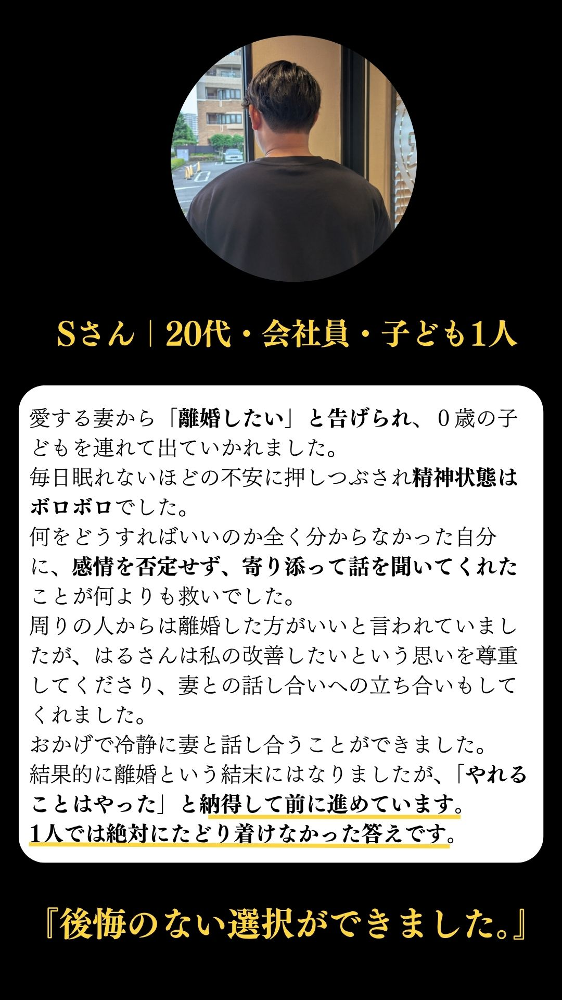
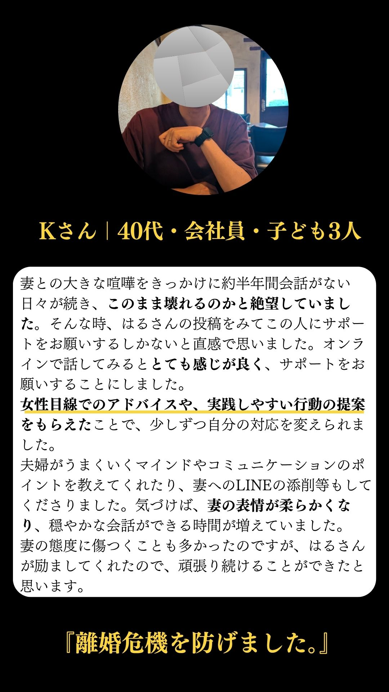
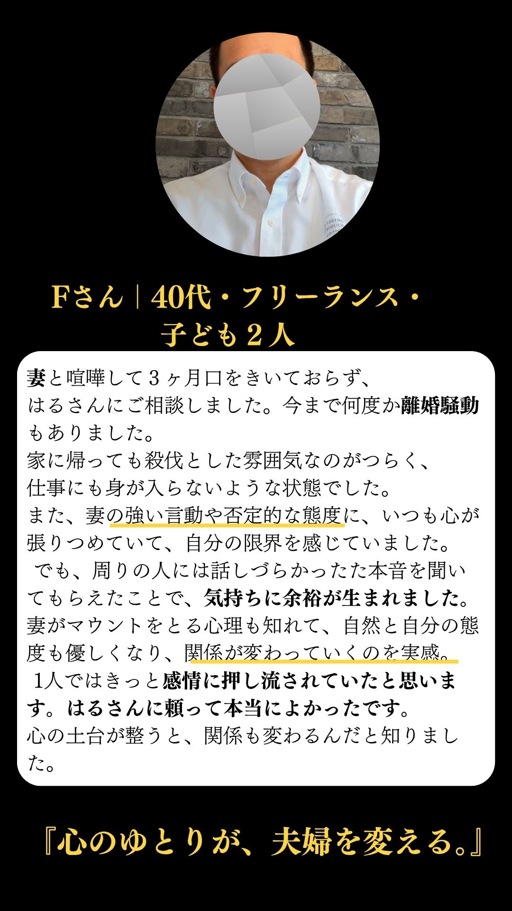
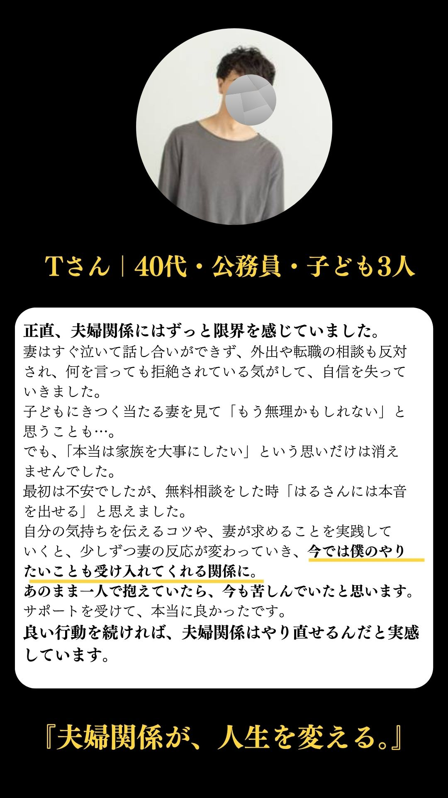

こんなお悩みありませんか？
妻が冷たい、会話がない、別居中、不倫疑惑…
話し合えない、責められる、気持ちを押し殺している
「離婚すべき？やり直せる？」どうすればいいかわからない
初回相談とは？
話すだけでラクになる
心にかかえているモヤモヤを話すことで、気持ちが軽くなります。
本音が出せるから整理できる
誰にも言えなかった本音を安心して話せる空間で、ご自身の気持ちを整理できます。
モヤモヤした頭がクリアになる
現状を客観的に見つめ直し、次の一歩を考える手助けをします。
離婚のリスク
💸金銭的損失
- 慰謝料：30万〜100万円（不貞有りの場合）
- 財産分与：数百万〜1,000万円超
- 子供の養育費（18歳まで）：月2万〜6万円 × 12ヶ月 × 年数
- 引越し費用・弁護士費用など：10万〜50万円
💔精神的ダメージ
- 子供への心理的影響
- 社会的孤立感・再出発の不安
- 「あの時もう少し努力しておけばよかった」という後悔
選ばれている理由
▶ 相談件数250件以上／個人支援に特化した実績
多くの男性の夫婦関係に向き合い、具体的なサポートを提供してきました。
▶ 女性目線もわかる第三者だからこそ、妻の心理も冷静に分析できる
男性の気持ちに寄り添いつつ、女性の心理を理解することで、より的確なアドバイスが可能です。
▶ 「離婚しない方がいい」と押しつけない
離婚も再構築も、お客様にとって最善な選択ができるよう、中立な立場からサポートします。
▶ 寄り添いながらも、人生の選択を一緒に考える姿勢
お客様の人生を尊重し、後悔のない決断を共に導き出します。
お客様の声




よくある質問
顔出し必要ですか？
顔出しの有無は選択可能です。ご安心ください。
離婚前提でも相談できますか？
はい、大丈夫です。離婚を考えている方も、再構築を考えている方も、どちらのご相談も承ってます。
継続サポートは強制されますか？
一切そのようなことはございません。初回相談でご納得いただけた方のみ、必要に応じてサポートのご案内させていただきます。